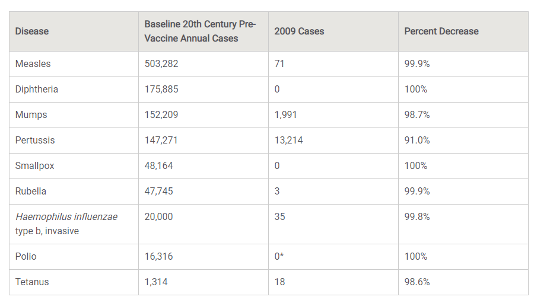
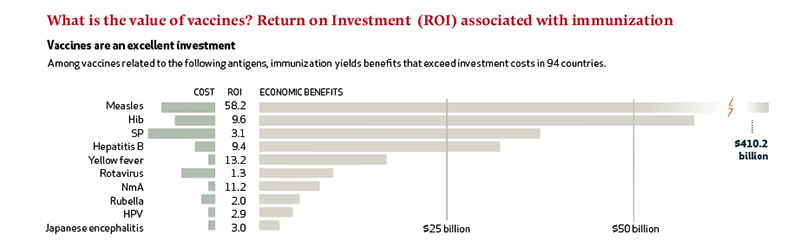

The Benefits of Vaccination
Benefits on Your Health
Once your immune system is trained to resist a disease, you are said to be immune to it. Before vaccines, the only way to become immune to a disease was
to actually get it and, with luck, survive it. This is called naturally acquired immunity. With naturally acquired immunity, you suffer the symptoms of the disease and
also risk the complications, which can be quite serious or even deadly. In addition, during certain stages of the illness, you may be contagious and pass the disease to
family members, friends, or others who come into contact with you. Vaccines, which provide artificially acquired immunity, are an easier and less risky way to become immune.
Vaccines can prevent a disease from occurring in the first place, rather than attempt to cure it after the fact.

Benefits on Others It is also much cheaper to prevent a disease than to treat it. In a 2005 study on the economic impact of routine childhood immunization in the United States, researchers estimated that for every dollar spent,
the vaccination program saved more than $5 in direct costs and approximately $11 in additional costs to society. Vaccines protect not only yourself but also others around you. If your vaccine-primed immune system stops an
illness before it starts, you will be contagious for a much shorter period of time, or perhaps not at all. Similarly, when other people are vaccinated, they are less likely to give the disease to you. Vaccines protect not
only individuals but entire communities. That is why vaccines are vital to the public health goal of preventing diseases.
If a critical number of people within a community are vaccinated against a particular illness, the entire group becomes less likely to get the disease. This protection is called community, or herd, immunity. On the other
hand, if too many people in a community do not get vaccinations, diseases can reappear. In 1989, low vaccination rates allowed a measles outbreak to occur in the United States. The outbreak resulted in more than 55,000 cases
of measles and 136 measles-associated deaths.
